Last Updated: 2023-05-19
In this tutorial, you will be going through all the steps necessary to build, sign and deploy a Flutter app to the Apple App Store.
If you don't yet have an account with a Git provider, you can create a new one with GitHub here.
If you don't yet have a PAID Apple Developer account, you can begin the process of creating a new one here. Note that you will need to provide Apple with a number of pieces of information and pay (as of the time of this writing) $99USD per year for your account (or the equivalent for your country). Once you get to the end of the process and see a screen like this:
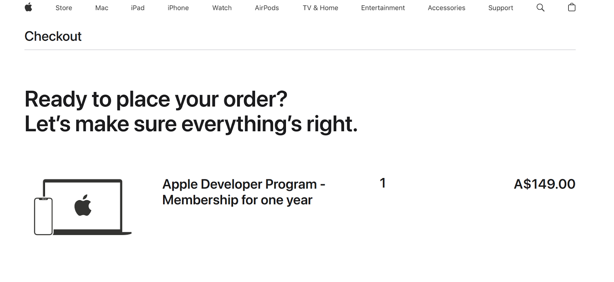
you are almost finished with the process.
Confusingly, Apple splits the functionality required to manage your developer and app information across both the Apple Developer website and the App Store Connect website, and the processes and user interface on those sites are often convoluted and confusing to newcomers, so as much as possible, this tutorial will make use of Codemagic's functionality to keep to an absolute minimum the interactions required with both those sites.
In order to publish your app to the App Store, you will first need an app!
Before we begin, make sure you are using the latest current version of the Flutter SDK stable channel:
flutter --version
Flutter 3.10.0 • channel stable • https://github.com/flutter/flutter.git
Framework • revision 84a1e904f4 (7 days ago) • 2023-05-09 07:41:44 -0700
Engine • revision d44b5a94c9
Tools • Dart 3.0.0 • DevTools 2.23.1The above specific versions are not important, but what you want to make sure is that the output includes the text: • channel stable •
as per the example above.
For the purposes of this tutorial, we will use a Flutter app that is closely based on the "Counter app" that is created for you when you run Flutters create command.
You can do that now:
flutter create classic_counterOne of the parts to creating our app that will be essential later on in the process of publishing it on TestFlight and the App Store is to create a unique identifier for it. On Apple platforms, this identifier is the Bundle ID.
Per the instructions in the Flutter documentation, you will first need to go to the Apple Developer site, login and begin the process of creating a new app identifier:
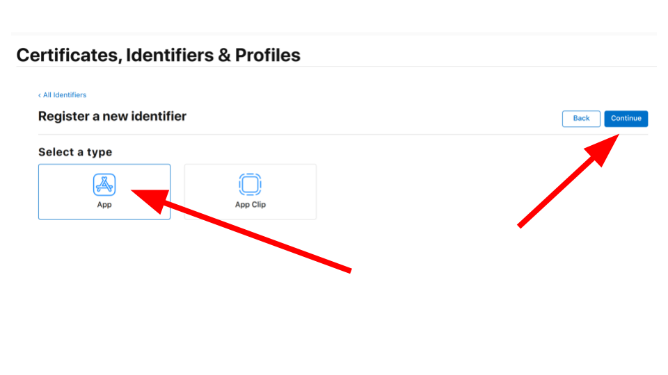
Subsequent steps in the process will ask you to choose the identifier type:
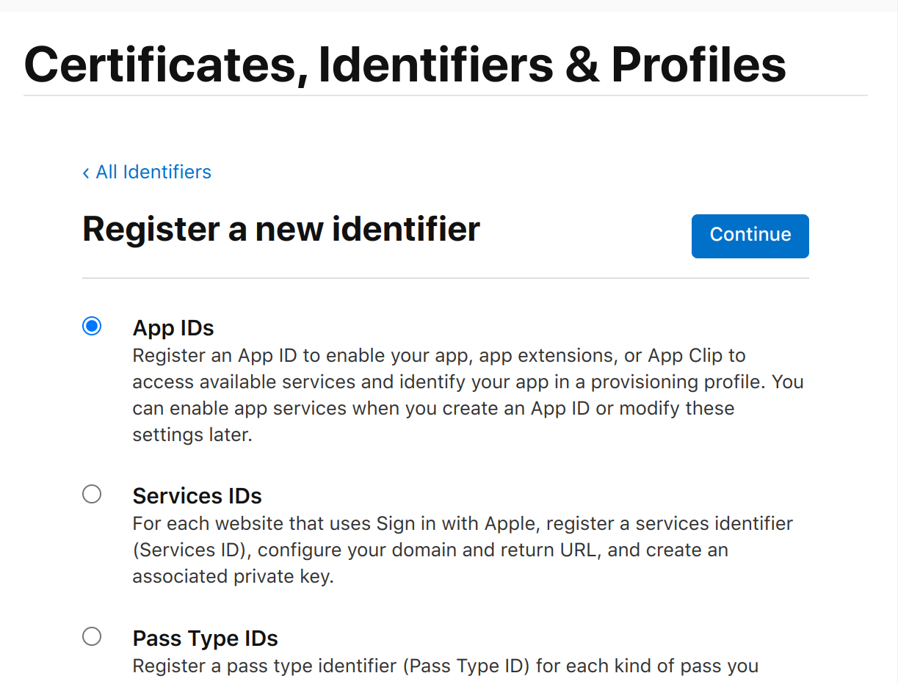
and finally enter your chosen Bundle ID:
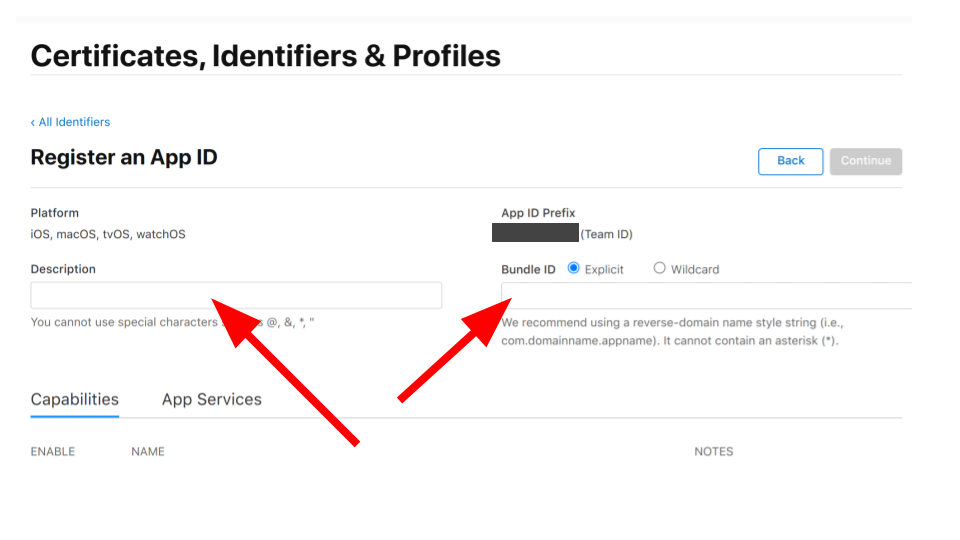
Once you have completed all the steps in creating the app identifier, you should see it listed under your Apple Developer account under the Identifiers section:
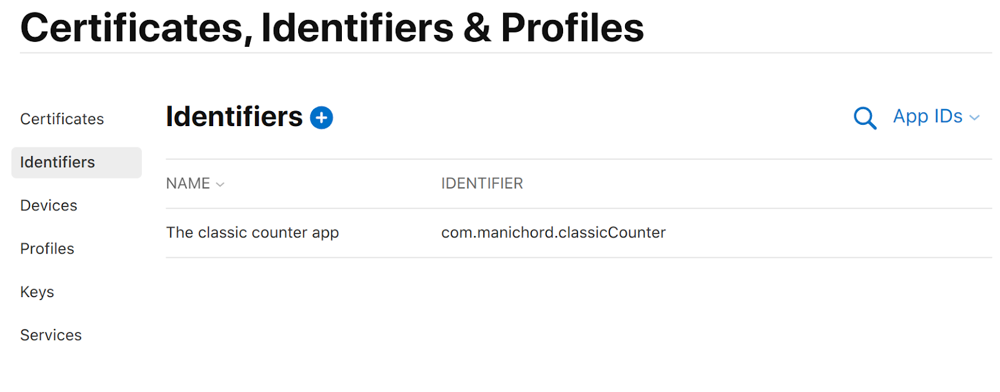
You now need to update your Flutter app code to use the Bundle ID you have chosen. The easiest way to do this is using Xcode and you can follow the instructions for how to do that from the Flutter documentation.
Now that you have updated your app, you will need to add it to a Git repository and push that repository to a Git hosting provider (eg. GitHub) after you have created a new repository with the hosting provider:
cd classic_counter
git init .
git commit -a -m "app scaffold"
git add remote origin <git-hosting-provider-url>
git push origin mainYou will start by initially building your app for iOS without code signing on Codemagic.
To setup your app on Codemagic you need to create the project by connecting a Git hosting provider (eg. GitHub):
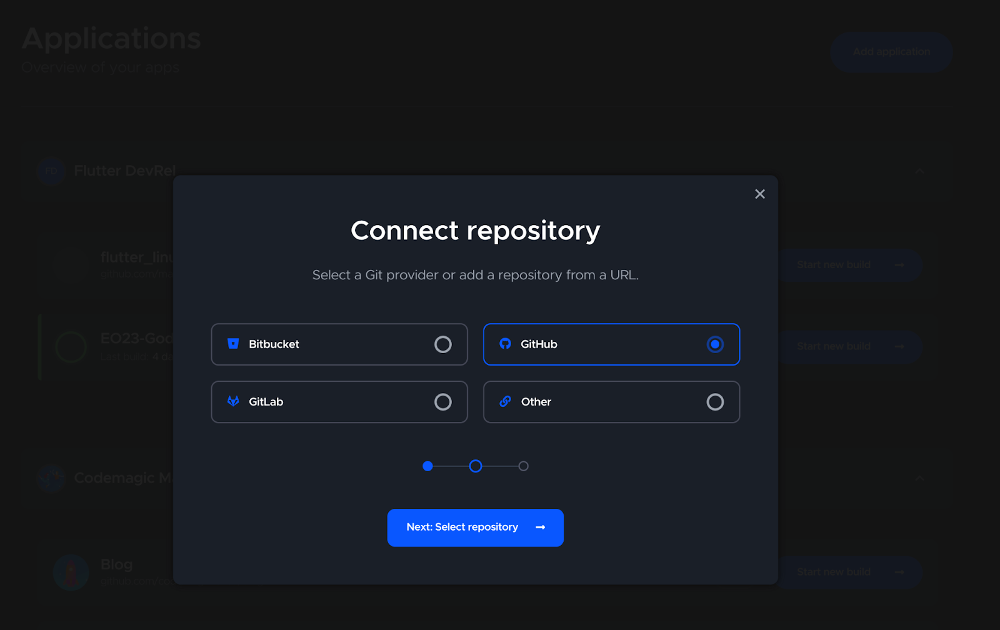
Then select a repository and the Flutter project type from there:
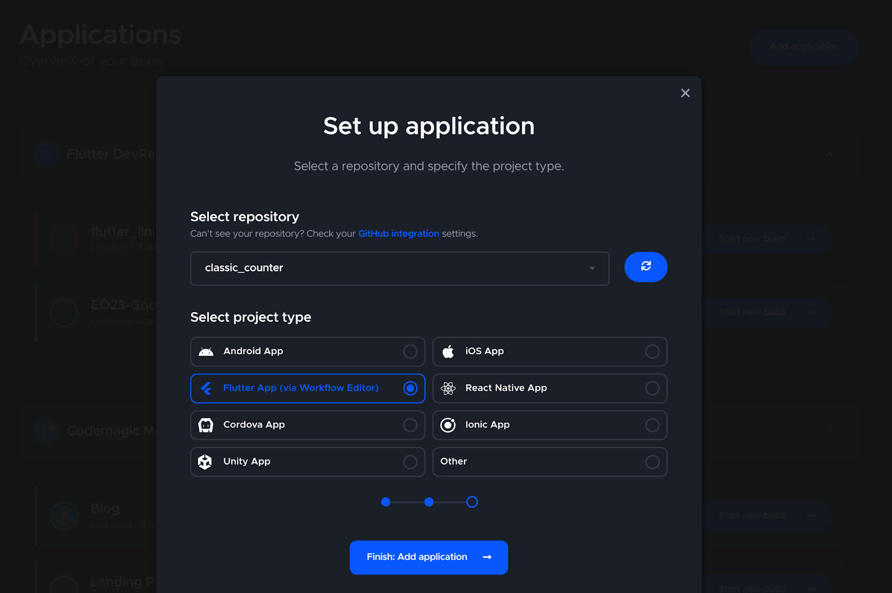
You then need to configure a few settings for your new app project on Codemagic. First check that only iOS is selected as the platform:
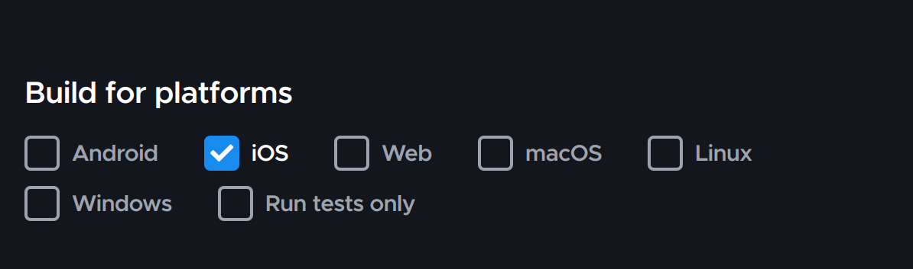
Then that the versions are set to Stable Channel, Latest Xcode and default Cocoapods:
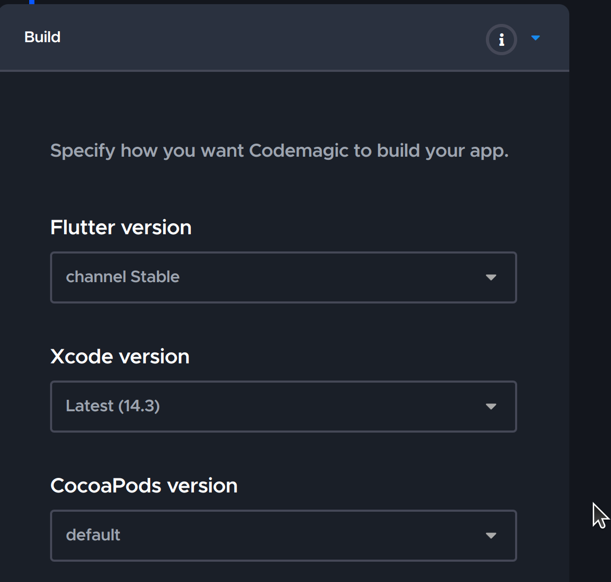
And that the build Mode is set to Debug:
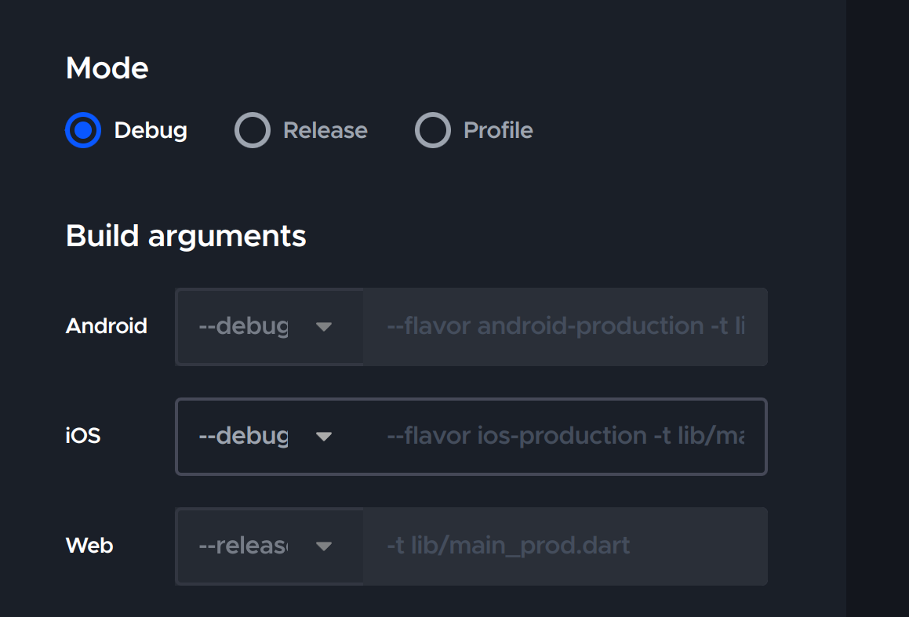
Once you have made those changes to the settings, click Save changes button in the top right hand corner:
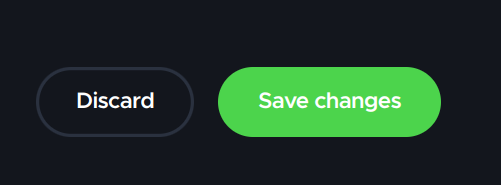
and then you can then start the your first build by clicking on the Start first build button:
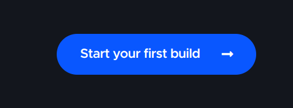
After your first build, this button will change to be Start new build:
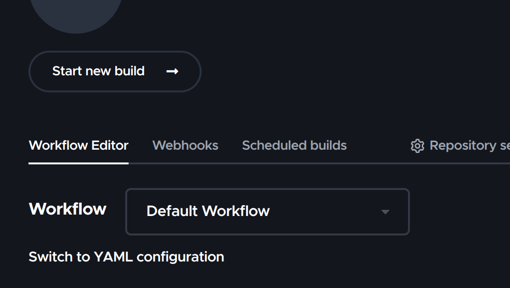
Once your build successfully completes, you will have an unsigned artifact that you will be able to run only on the iOS Simulator.
Codemagic supports both "automatic" and "manual" processes to code sign you app. We will only describe using automatic code signing in this tutorial as it is by far the easier process, especially for newcomers to iOS code signing.
But what is code signing for apps in the first place?
In general terms, code signing is a cryptographic process by which certificates, which themselves are made up of corresponding public and private keys, can be used to create a "hash" value of some data (eg. the executable code and resources that make up an app). The private key is used in such a way that we can later use the public key to confirm that only someone possessing the private key could have created (calculated) that hash value for the given app.
In the context of Apple and iOS apps, code-signing is the process by which Apple ensures that only apps that it has explicitly authorized are able to be executed on Apple platforms such as iOS devices. The way this is achieved is through the use of provisioning profiles. Provisioning profiles are files that can only be created by the Apple Developer website which specify for an app things such as who can sign the app, where those apps can run and what the apps are entitled to do by storing information such as the certificate that can be used to sign the app, the apps unique identifier and other app metadata such as the unique IDs of the devices the app is allowed to run on.
The reason that only the Apple Developer website is able to create provisioning profiles is that the profiles themselves are signed by Apple, using a certificate they hold.
As you might be able to tell from the above, the Provisioning Profile lies at the heart of the code signing process on iOS (and in fact all Apple platforms) and much more details about them can be found at in the Apple technote on the subject.
An important point to note is that there can (and likely will) be multiple provisioning profiles per each of your apps. For example the Ad-Hoc provisioning profiles are only intended for you to use when you are building your app to distribute to a small number of users (or testers) directly and you whose device UDID's you would need to add directly into the Apple Developer portal. While the App Store profile is used for uploading your app build to App Store Connect, for distribution via Test Flight or finally via the public App Store itself.
Luckily for the purposes of this tutorial, most of the details of dealing with obtaining, managing and using Provisioning profiles can be handled by Codemagic via the App Store Connect API. But in order to allow Codemagic to do so on behalf of your app, you first need to obtain an App Store Connect API key. The process to do so is:
This process is also covered in this section of the Codemagic documentation. Once you have obtained an API key, you will need to enter it, along with the Issuer ID and Key ID both of which can be found on the App Store Connect website:
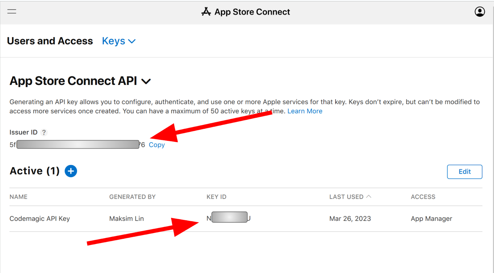
and then add them into your team/account section in the Codemagic webapp:
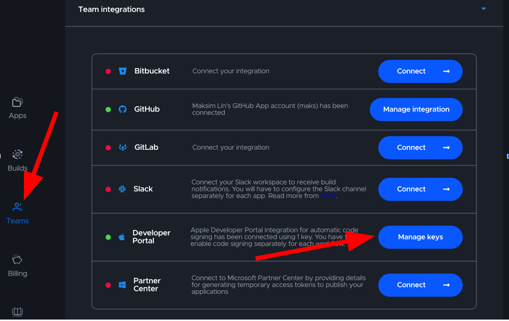
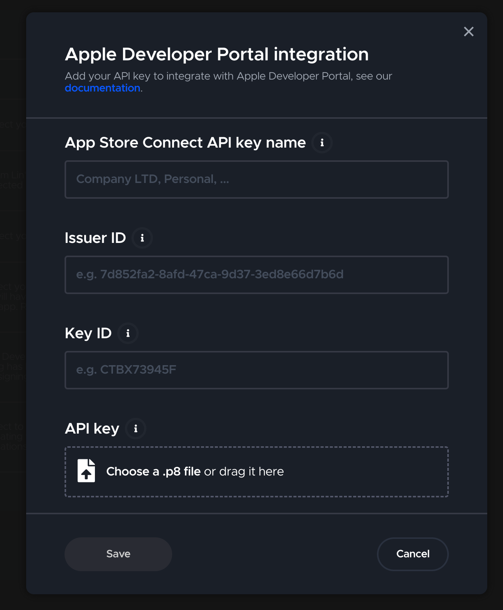
If you prefer to a see a demonstration, the above process of how to obtain and use the API key is covered in this video.
You will want to test your app on at least one actual iOS device, so you will need to register that device on your Apple Developer account prior to building your first signed iOS artifact.
To add your devices to your profile, you will need to go to the Devices section of the Apple Developer web console and click on the plus button:
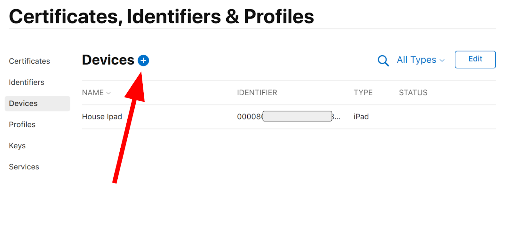
Specific instructions on how to obtain the required UUID of each of your iOS devices can be found in the Apple developer documentation.
Now, moving back to the Codemagic web interface: in your app workflow editor configuration, you will need to go to the Distribution section and make sure that the code signing method is set to Automatic and that the App Store Connect API key and Bundle Identifier match those that you set up in the previous parts of this step:
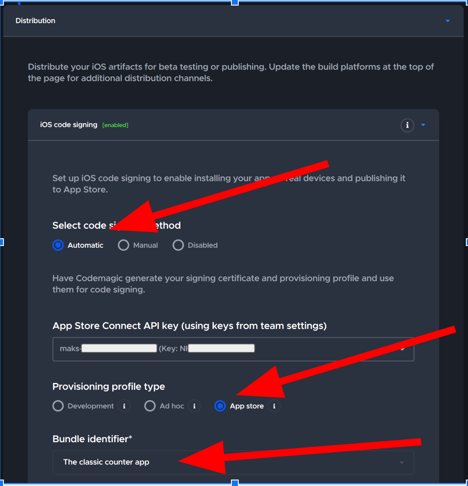
Now that you have done all the required preparation, you can start a new build of your app on Codemagic using the start new build button as you did previously and once it completes successfully, you will have a signed artifact that you can download and install to your iOS device:
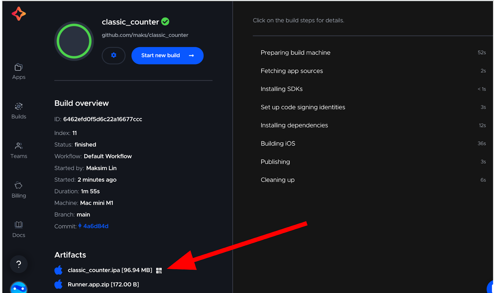
Now that you have a working signed build, the next step is to upload it to TestFlight to make it more easily available to others to install and test your app.
To set up uploading to TestFlight you will need to again go to the Distribution section of your apps workflow editor in Codemagic, but this time open the App Store Connect instead of the iOS code signing subsection:
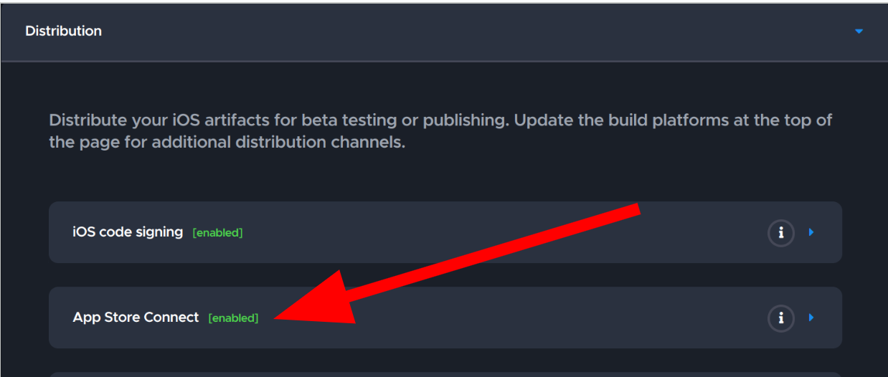
In that section you will need to ensure that both the Enable App Store Connect publishing and Submit to TestFlight beta review items are enabled:
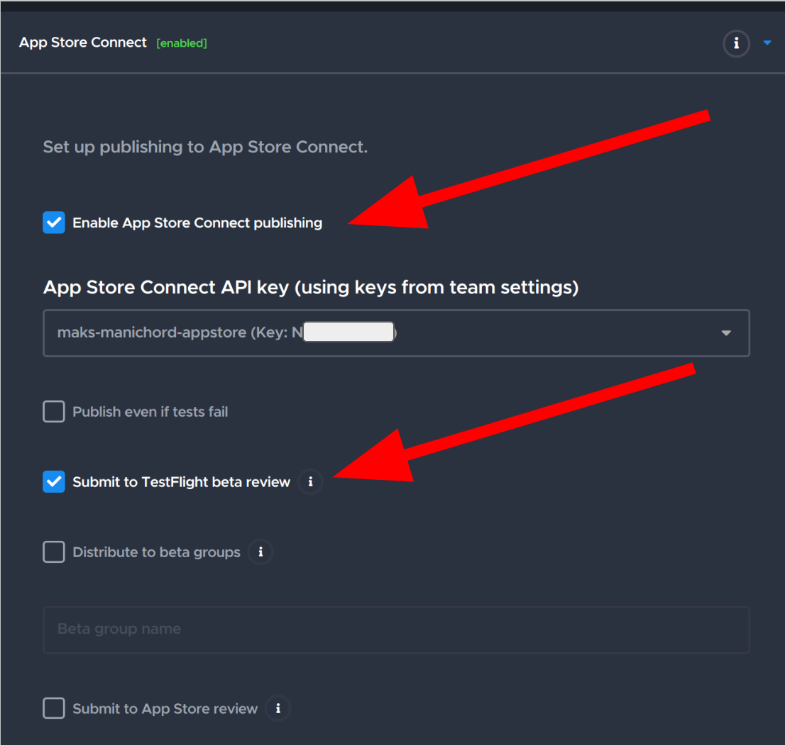
Once the build workflow successfully completes, if you look in App Store Connect website, you should now see your app build listed there, under the TestFlight tab:
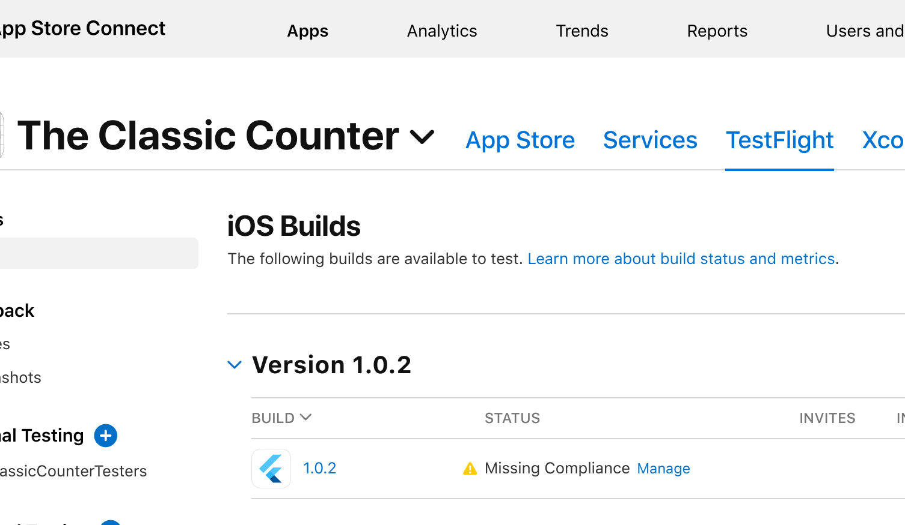
On your iOS device, you will need to open the App Store app and install the TestFlight app in order to be able to install your app.
Finally, after you have iterated on making and testing changes to your app and you are ready to publish your app to the public on the App Store, the final step of submitting your app for review to Apple just requires you to run your build on Codemagic again, but this time just enabling the option under the Codemagic App Store Connect subsection to submit the app for review:
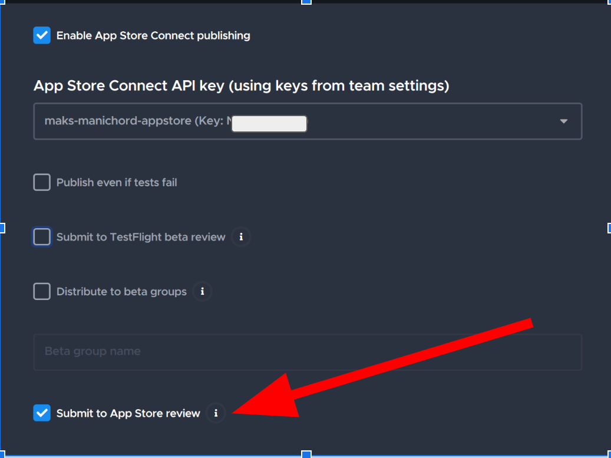
Congratulations!
You have now published your first Flutter app to the Apple App Store!
✅ Created a new Flutter app project on Codemagic
✅ Setup an account on Apple App Store connect
✅ Built and signed your iOS app
✅ Deployed your app to Apple TestFlight and the App Store